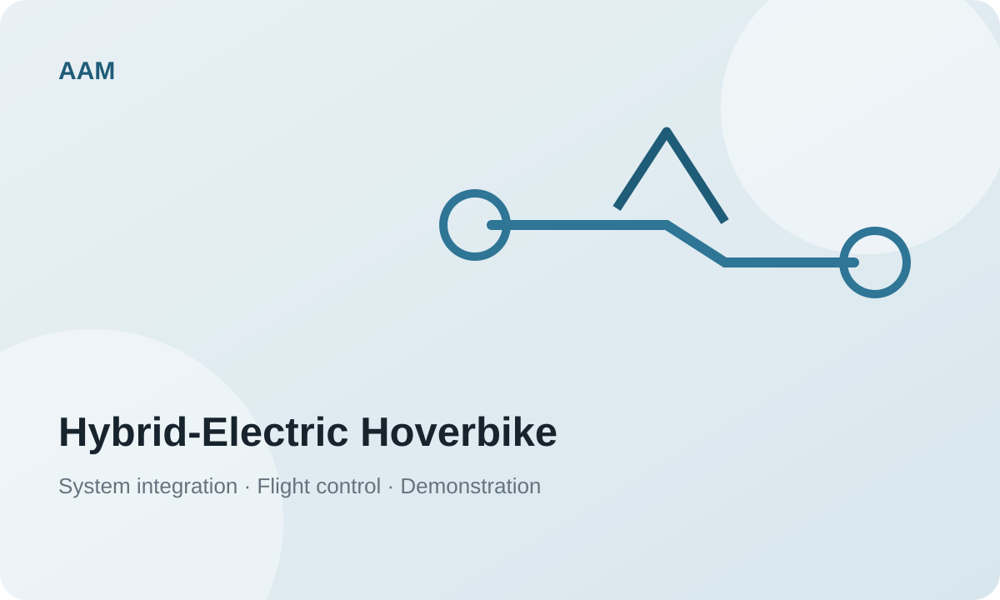
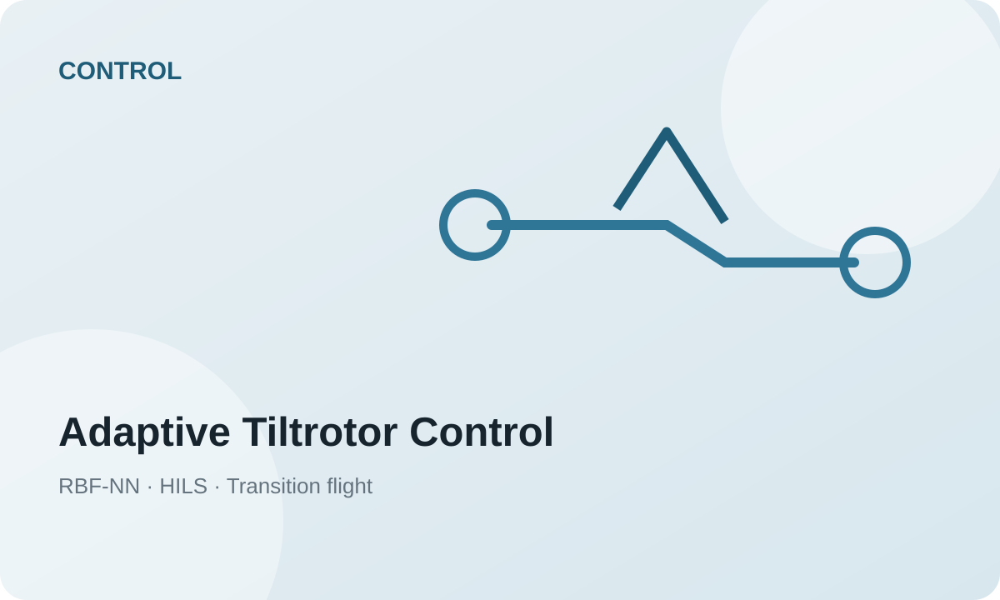
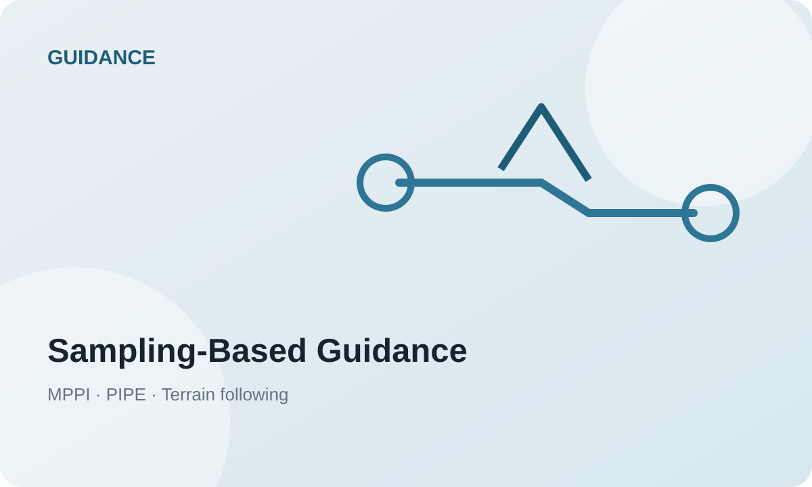

Flight Dynamics & Control
Nonlinear dynamics, NDI, robust/adaptive control, MRAC, RBF-NN, and flight-control validation.
AEROSPACE GUIDANCE · CONTROL · AUTONOMOUS FLIGHT
I am an aerospace researcher working at the intersection of flight dynamics and guidance, navigation, and control (GNC), sampling-based optimal decision making, and autonomous aerial systems. My work spans nonlinear and adaptive flight control, MPPI-based guidance, UAV/UAM system integration, onboard autonomy, and real-world flight validation.
During my graduate studies at KAIST, I worked on tiltrotor and multirotor flight control, stochastic optimal guidance, collision avoidance, and terrain-following autonomy. I also served in a project-lead / POC role for a hybrid-electric Hoverbike research program, coordinating system integration and prototype demonstration across multiple collaborating laboratories. I am currently extending this foundation toward AI-enabled and uncertainty-aware autonomous flight at ETRI.
RESEARCH THEMES
My research is organized around a physics-based aerospace core and expands toward learning, perception, and system-level autonomy.
Nonlinear dynamics, NDI, robust/adaptive control, MRAC, RBF-NN, and flight-control validation.
MPPI/MPC, stochastic optimal control, terrain following, collision avoidance, and online parameter estimation.
Onboard autonomy, obstacle avoidance, autonomous landing, HIL, flight-test integration, and ROS/ROS2 systems.
eVTOL/UAM vehicle integration, hybrid-electric aerial systems, fault tolerance, and system-level demonstration.
SELECTED SYSTEM & RESEARCH PROJECTS
Selected projects highlighting my emphasis on connecting algorithms to real aerial systems.

Project POC · System Integration
Led POC-level coordination across eight collaborating laboratories for a hybrid-engine-based manned/unmanned multirotor platform. Work included prototype integration, flight-control software, redundant computing and fault-response functions, autonomous obstacle avoidance / landing integration, and performance-evaluation planning.
Note: Replace this placeholder only with publicly cleared photos/videos.

Developed RBF-NN-based adaptive flight-control methods for transition flight, with onboard HILS and flight-test validation.
Worked on monocular-image-based depth generation, AI collision-avoidance guidance, ROS mission-computer integration, and evaluation of reinforcement-learning guidance.

Developed MPPI-based real-time guidance for collision avoidance and terrain following, with GPU-parallelized sampling and online path-integral parameter estimation.
SELECTED WORK
A small selection is shown here. See Google Scholar for the complete list.
Kwangwoo Jang, Youngjae Kim, Sukjae Im, Man Jun Koh, Hyochoong Bang
Journal of Guidance, Control, and Dynamics
Hyeonji Hong, Nakyeong Lee, Kwangwoo Jang, Gague Kim, Yangjae Jeong, et al.
Scientific Reports
Jayden Dongwoo Lee, Lamsu Kim, Kwangwoo Jang, Seongheon Lee, Hyochoong Bang
Proceedings of the Institution of Mechanical Engineers, Part G: Journal of Aerospace Engineering
Kwangwoo Jang, Hyochoong Bang, Yoonsoo Kim
Journal of Guidance, Control, and Dynamics
BACKGROUND
Research Engineer · Air Mobility Research Division
Research on air mobility, autonomous aerial systems, onboard intelligence, and UAV system technologies.
Sampling-Based Motion Planning for Multirotor UAVs
Sampling-based motion planning, MPPI guidance, collision avoidance, terrain following, and autonomous aerial systems.
Quad-Tiltrotor Transition Flight Control
Transition-flight dynamics, nonlinear flight control, and adaptive-control methods for tilt-type VTOL aircraft.
Foundations in flight dynamics, control, aerodynamics, propulsion, and aerospace systems.
RECOGNITION
Recognition for contribution to the successful development and demonstration of the high-reliability multi-purpose Hoverbike research program.